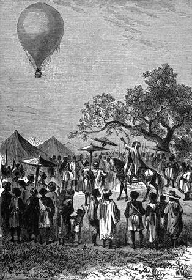

Odjezd v noci. – Všichni tři. – Choutky Kennedyovy. – Opatření pro bezpečnost. – Tok Šarie. – Jezero Čadské. – Voda. – Hroch. – Marný výstřel.
Ke třetí hodině z rána znamenal posléze Joe, maje hlídku, že město se pod ním posunuje. Viktorie se rozjížděla. Kennedy a doktor procitli.

Zatím šejk poručil ticho a promluvil řeč.
Tento podíval se na bussolu a poznal s uspokojením, že je vítr unáší k severo-severozápadu.
„Štěstí nám přeje,“ pravil; „vše se nám daří; ještě dnes uzříme jezero Čadské.“
„Je-li pak to velký rozloh vody?“ otázal se Kennedy.
„Znamenitý, milý Dicku; v největší délce a v největší šířce měří jezero to asi dvě stě kilometrů.“
„Procházka nad hladinou vodní dodá trochu rozmanitosti naší cestě.“
„Zdá se mi však, že si nemůžeme stěžovati; jest velice rozmanita a předkem míjí za okolností pokud možná nejlepších.“
„Zajisté, Samuele; krom újem na poušti nepodstoupili jsme žádného vážného nebezpečí.“
„Jisto jest, že naše statečná Viktorie osvědčila se až dosud ku podivu. Dnes máme den 12. května; vyjeli jsme 18. dubna; jsme tedy dvacetpět dní na pochodě. Ještě deset dní, a budeme na místě.“
„Kde?“
„Nevím; ale co na tom?“
„Máš pravdu, Samuele; zůstavme Prozřetelnosti na starost, aby nás vedla a zachovala při dobrém zdraví, jako jsme nyní! Nevypadáme, jako bychom byli procestovali nejnezdravější končiny na světě!“
„Mohli jsme vystoupiti do větší výšky a to jsme učinili.“
„Ať žijí povětrné cesty!“ zvolal Joe. „Pětadvacet dní prošlo a jsme zdrávi, jíme a pijeme dobře, odpočíváme pěkně, ba odpočíváme až příliš, neboť nohy mi rezavějí, i nemrzelo by mne, kdybych je mohl prohnati na padesát kilometrů.“
„Té zábavy si dopřeješ v londýnských ulicích, Joe; zatím buď nám útěchou to, že jsme se vydali na cestu tři jako Denham, Clapperton, Overweg, jako Barth, Richardson a Vogel, a jsouce šťastnější svých předchůdců, že jsme dosud všichni tři pohromadě! Velice pak sejde na tom, abychom se nerozlučovali. Kdyby se Viktorie musila vznésti, aby se vyhnula náhlému, neočekávanému nebezpečí, zatím co by jeden z nás meškal na zemi, kdo ví, zdali bychom se s ním kdy shledali? A proto pravím upřímně Kennedyovi, že by mi nebylo milo, kdyby odcházel pod záminkou honby.“
„Nicméně dovolíš, příteli Samuele, abych nedbal tohoto vrtochu; neškodí, obnoví-li se naše zásoby; mimo to navnadil jsi mne před odjezdem nadějí na celou řadu znamenitých honeb, a potud vykonal jsem málo za příkladem Andersonův a Cummingů.“
„Milý Dicku, buď ti selhává paměť, anebo zapomínáš ze skromnosti na své lovecké činy; zdá se mi, pominu-li mlčením drobnou zvěř, že máš už na svědomí antilopu, slona a dva lvy.“
„Aj! co je to na afrického lovce, kterému přebíhají mimo ústí pušky všeliká zvířata na zemi stvořená? Hle! hle! podívej se na to stádo žiraf!“
„To že jsou žirafy?“ podivil se Joe; „vždyť jsou zvíci pěsti!“
„Poněvadž jsme na tisíc stop nad nimi; ale zblízka bys viděl, že jsou třikrát tak vysoké jako ty.“
„A co říkáš tomu stádu sajek?“ ukazoval dále Kennedy, „a těm pštrosům, kteří prchají rychle jako vítr?“
„To že jsou pštrosi?“ zvolal Joe, „vždyť jsou to slepice a utíkají jako slepice!“
„Poslyš, Samuele, není-li možno se přiblížit?“
„Jest možno se přiblížit, Dicku, ale není možno přistát k zemi.
Nač bys také střílel ta zvířata, která by ti nebyla k ničemu? Kdyby šlo o to, abys zahubil lva, tygří kočku nebo hyenu, nebyl bych od toho; ubylo by aspoň o nebezpečnou šelmu; ale zabiti antilopu nebo sajku jen za tou příčinou, abys ukojil své lovecké choutky, nestojí věru za namáhání. Ostatně, příteli, sneseme se k zemi na sto stop, a spatříš-li nějakého dravce, vpálíš mu nám pro radost kulku do srdce.“
Viktorie sestupovala ponenáhlu, ale setrvala nicméně v bezpečné výši. V této divoké a silně zalidněné krajině bylo se míti na pozoru před nenadálými nebezpečenstvy.
Cestovatelé tíhli pak přímo po toku Šarie; krásné břehy této řeky mizely ve stínu stromů všelikých barev; liány a rostliny popínavé vinuly se všemi směry, skládajíce podivné spleteniny všech odstínů.
Krokodilové vyhřívali se na slunci, nebo se potápěli pod vodu hbitě jako ještěrky; laškujíce proháněli se kolem četných zelených ostrovů, jimiž byla řeka prostoupena.
Kochajíce se takto pohledem na bohatou, bující přírodu, minuli okres maffatajský. Okolo devíti hodin ráno dospěli konečně doktor Fergusson a jeho přátelé poledního břehu jezera Čadského.
Tu bylo tedy to Kaspické pleso Afriky, jehož jsoucnost odkazována tak dlouho do říše bajek… to vnitrozemní moře, k němuž dorazily jediné výpravy Denhamova a Barthova. Doktor pokusil se určiti nynější jeho podobu, lišící se velmi od podoby roku 1847; jest věru nemožno nakresliti mapu tohoto jezera; jeť obklopeno blátivými, téměř neprostupnými močály, v nichž by byl Barth málem zahynul; rok od roku stávají se tyto močály, porostlé rákosím a papyrusem zvýši patnácti stop, samy jezerem; začasté bývají také města rozložená na jeho březích zaplavována, kterážto pohroma stihla Ngornu roku 1856, a nyní potápějí se hroši a krokodilové v místech, kde stávaly příbytky bornuské.
Slunce vysílalo oslňující paprsky na tuto pokojnou vodu, a na severu splývali dva živlové v týž obzor.
Doktor chtěl zjistiti podstatu vody, která považována dlouho za slanou; nebylo nijak nebezpečno přiblížiti se k jezerní hladině, a loďka vznášela se nad ní jako pták zdálí pěti stop.
Joe ponořil láhev a vytáhl ji poloplnou; okusivše tuto vodu shledali ji nevalně pitelnou, s jakousi příchutí sodovou.
Co si doktor zaznamenával výsledek zkoušky, třeskla mu po boku rána z pušky. Kennedy nemohl odolati touze vypáliti kulku na obludného hrocha; zvíře, nabírající pokojně dechu, zmizelo, sotva zahučel výstřel, a jak se podobalo, neublížila mu jinak koule lovcova. „Lépe by bylo ho zaháčit,“ navrhoval Joe.
„A jak?“
„Jednou z našich kotev. Byla by to udice přiměřená takovému zvířeti.“
„Opravdu,“ souhlasil Kennedy, „Joe má myšlenku…“
„Kterou prosím, abyste neprováděli!“ namítal doktor. „Zvíře zavleklo by nás rychle tam, kde nemáme nic dělat.“
„Zvláště nyní, když víme, jaká je voda čadská. Jí-li pak se ona ryba, pane Fergussone?“
„Ta ryba, Joe, není nic jiného než ssavec z čeledi tlustokožců; jeho maso je prý výtečné a vede se s ním čilý obchod mezi kmeny po jezerních březích.“
„Tu lituji, že se rána páně Dickova nedodělala lepšího úspěchu.“
„To zvíře je zranitelné pouze na břiše a mezi stehny; kulka Dickova ani ho neškrábla. Leč uzdá-li se mi půda příhodnou, zastavíme na severním konci jezera; tam octne se Kennedy v učiněném zvěřinci a nahradí si po libosti, co zameškal.“
„Nuže!“ odvětil Joe, „ať se pan Dick pustí trochu do lovu na hrochy! Rád bych okusil maso tohoto obojživelníka. Není věru nijak přirozeno, aby člověk pronikl až do středu Afriky a živil se tu vodními slukami a koroptvemi jako v Anglii!“